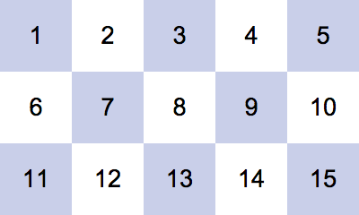

Моргните дважды, а затем медленно прочитайте числа от 1 до 15
Если вам не удалось дочитать до 10 ни разу не моргнув — это первый признак наиболее распространенного дискомфорта при ношении контактных линз – ощущение сухости глаз.
Заполните небольшую анкету и получите бесплатную консультацию врача-офтальмолога
Проверьте, подходят ли Вам линзы, которые Вы носите
Более половины носителей контактных
линз испытывают дискомфорт
в своих линзах*
Дискомфорт — это прогрессирующее
состояние, которое может привести к
сокращению времени ношения или полному
отказу от контактных линз.*
*the TFOS International Workshop on
Contact Lens Discomfort // 2013
Малышев Владислав Юрьевич
Врач-офтальмолог
Ко мне ежедневно обращаются люди с жалобами на дискомфорт.
Каждый год от 15 до 30% носителей линз прекращают пользоваться контактными линзами*
Сухость глаз — самая распространенная причина отказа от ношения контактных линз.
При возникновении сухости не нужно сразу отказываться от ношения линз.
Лучше всего проконсультироваться с офтальмологом. Врач выявит причину проблемы и может порекомендовать перейти на другой тип контактных линз или использовать другой раствор для ухода за линзами.
* По данным международного клинического исследования 2010 года, проведенного в Северной Америке, Европе и Азии, «Новые данные по прекращению ношения контактных линз»
Медицинский осмотр состояния глаз в текущих контактных линзах, объективное выявление текущих проблем
Подбор новых контактных линз с лучшими характеристиками для решения выявленных проблем посредством диагностических контактных линз
Для записи заполните небольшую анкету
После отправки анкеты мы свяжемся с Вами и назначим удобное для Вас время приёма.